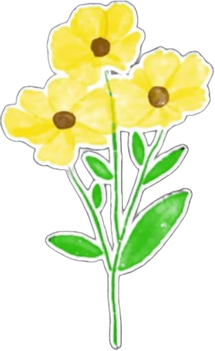

Y pensar que solo mandé un sticker hace dos años.
Y como esto ya se volvió tradición para mí...
¿Para quién son estas flores?
Ese nombre no me suena... Esto no es para ti
¿Hola? ¿Por qué te dio curiosidad el mío? Okey, bueno, hice esta parte pensando que probablemente nadie la verá, entonces no mentí ni escondí nada. Suerte, aunque dudo que alguien lo vea.
No todo lo que hay acá es decoración, revisa.
Bueno, una más.
0 / 0